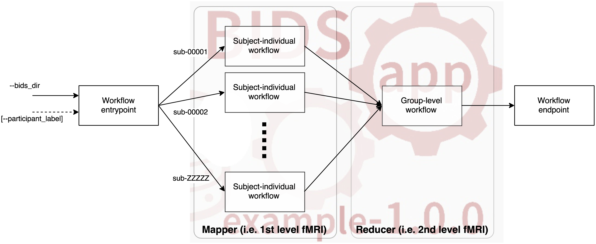

name: title layout: true class: center --- layout: false count: false .middle.center[ # Standardizing neuroimaging workflows <br /> <br /> ### Oscar Esteban #### CHUV | Lausanne University Hospital ###### [www.nipreps.org/presentations/2023-EPFL](https://www.nipreps.org/presentations/2023-EPFL/) ] --- layout: false count: false .middle.center[ # Standardizing neuroimaging workflows <br /> <br /> ### Oscar Esteban #### CHUV | Lausanne University Hospital ###### [www.nipreps.org/presentations/2023-EPFL](https://www.nipreps.org/presentations/2023-EPFL/) ] --- name: newsection layout: true .perma-sidebar[ <p class="rotate"> <a rel="license" href="http://creativecommons.org/licenses/by/4.0/"><img alt="Creative Commons License" style="border-width:0; height: 20px; padding-top: 6px;" src="https://i.creativecommons.org/l/by/4.0/88x31.png" /></a> <span style="padding-left: 10px; font-weight: 600;">Standardizing neuroimaging workflows</span> </p> ] --- # Outline .boxed-content[ .distribute.large[ * What does *neuroimaging workflow* mean? * What aspects of neuroimaging workflows can be *standardized*? * Why standardizing? * Buy my book (introducing *NiPreps*) * Going meta: standardizing standard brains (*TemplateFlow*) ] ] --- # Define (neuroimaging) workflow .boxed-content[ .distribute.large[ * Workflow as a recipe or a path on a roadmap: * Define the *input* and the *output* * Analysis tasks or steps * Computation graph (*connect* tasks/steps) * Execution of the graph * How to describe the recipe: * Workflow Description Language (WDL): *Nextflow* * Explicit programming: *Nipype*, *Scikit-Learn*'s ``Pipeline`` ] ] --- # WDL Example (Nextflow) .tiny[ ```WDL params.input_dir = 'data' params.output_dir = 'results' process fsl_preprocess { input: file input_image from "$input_dir/input.nii.gz" output: file "${params.output_dir}/preprocessed.nii.gz" script: """ bet $input_image ${params.output_dir}/brain.nii.gz flirt -in $input_image -ref MNI152_T1_2mm_brain.nii.gz -omat ${params.output_dir}/transformation.mat """ } process fsl_stats { input: file input_image from fsl_preprocess.output output: file "${params.output_dir}/stats.nii.gz" script: """ fslstats $input_image -m > ${params.output_dir}/mean.txt fslstats $input_image -p 50 > ${params.output_dir}/median.txt """ } workflow { fsl_preprocess | fsl_stats } ``` ] --- .pull-left[ <p align="center"> </p> <br /> ``` Python from nipype.interfaces.fsl import BET brain_extract = BET( in_file="/data/coolproject/sub-01/ses-01/anat/sub-01_ses-01_T1w.nii", out_file="/out/sub-01/ses-01/anat/sub-01_ses-01_desc-brain_T1w.nii" ) brain_extract.run() ``` ] .pull-right[ <p align="center"> <img src="https://nipype.readthedocs.io/en/latest/_images/nipype_architecture_overview2.png" width="65%" /> </p> ] --- # WDL Example - Translation into Nipype ```Python import nipype.interfaces.fsl as fsl import nipype.pipeline.engine as pe input_image = 'input.nii.gz' output_dir = 'results' preprocess = pe.Node(fsl.BET(), name='preprocess') preprocess.inputs.in_file = input_image preprocess.inputs.out_file = f'{output_dir}/brain.nii.gz' stats = pe.Node(fsl.ImageStats(), name='stats') stats.inputs.in_file = f'{output_dir}/brain.nii.gz' stats.inputs.op_string = '-m -p 50' workflow = pe.Workflow(name='my_workflow') workflow.connect([(preprocess, stats, [('out_file', 'in_file')])]) workflow.base_dir = 'working_dir' workflow.run() ``` --- # Facets to standardize .boxed-content[ .distribute.large[ * **Outer interface** (inputs and outputs). Also, consider an internal data structure format for high throughput. * **Implementation** (WDL vs. programmed): code styling, best practices, BIDS-Apps. * **Modularize** (see *NiPreps* and *TemplateFlow*). * Use **containers** to ensure software delivery and reproducibility. * Implement testing and **continuous integration** to catch errors early and streamline development. * **Version** the workflow and its components to ensure compatibility and track changes, issue **LTS**. * Promote **community** and social standardization through collaboration, documentation, telemetry, and open-source practices. * **Visual reporting** ]] --- # BIDS-Apps: subject-wise parallelization <p align="center"> <a href="https://doi.org/10.1371/journal.pcbi.1005209"> <p></p><br /><br /> (Gorgolewski et al., 2017) </a> </p> --- ## The individual report <p align="center"> <video controls="controls" width="70%" name="Video Name" src="https://www.nipreps.org/assets/fmriprep-report.mov"></video> </p> --- # Why standardizing? .boxed-content[ .distribute.large[ * Pushing the *truck factor* above 1.0. * Engage users ]] --- # "Analysis-grade" data .larger[ The *NeuroImaging PREProcessing toolS* (*[NiPreps](https://nipreps.org).org*) augment scanners to produce *analysis-grade* data (= **directly consumable by analyses**) ] <br /> .pull-left[ ***Analysis-grade* data** is an analogy to the concept of "*sushi-grade (or [sashimi-grade](https://en.wikipedia.org/wiki/Sashimi)) fish*" in that both are: .large[**minimally preprocessed**,] and .large[**safe to consume** directly.] ] .pull-right[ <img align="right" style='margin-right: 50px' src="https://1.bp.blogspot.com/-Osh4H4WXka0/WlMJmVgkZTI/AAAAAAAAEMY/GynUzSomJ-EBiyqv2m-maiOyKSM7SOmNACLcBGAs/s400/yellowfin%2Btuna%2Bsteaks%2Bnutrition.jpg" /> ] --- <p align="center"> <img src="../assets/nipreps-chart.svg" width="63%" /><br /> <em>NiPreps</em> (<a href="https://doi.org/10.31219/osf.io/ujxp6">Esteban et al., 2020</a>) </p> --- template: title layout: false .middle[ <p align="center"> <img src="https://github.com/oesteban/fmriprep/raw/f4c7a9804be26c912b24ef4dccba54bdd72fa1fd/docs/_static/fmriprep-21.0.0.svg" width="95%" /> </p> ] --- # *TemplateFlow* <p align="center"> <img src="https://www.templateflow.org/assets/templateflow_fig-birdsview.png" width="60%" /><br /> (<a href="https://doi.org/10.1038/s41592-022-01681-2">Ciric et al., 2022</a>) </p> --- # *TemplateFlow* | Client <div class="asciicast" id="501873"></div> --- # Conclusion <p align="center"> <img src="https://media.springernature.com/full/springer-static/image/art%3A10.1038%2Fs41596-020-0327-3/MediaObjects/41596_2020_327_Fig1_HTML.png?as=png" width="90%" /><br /> (<a href="https://doi.org/10.1038/s41596-020-0327-3">Esteban et al., 2020</a>) </p> --- .boxed-content[ .middle.center[ # Thanks! ### Questions? #### NiPreps Hackathons 2023 - ISMRM and OHBM ] ]